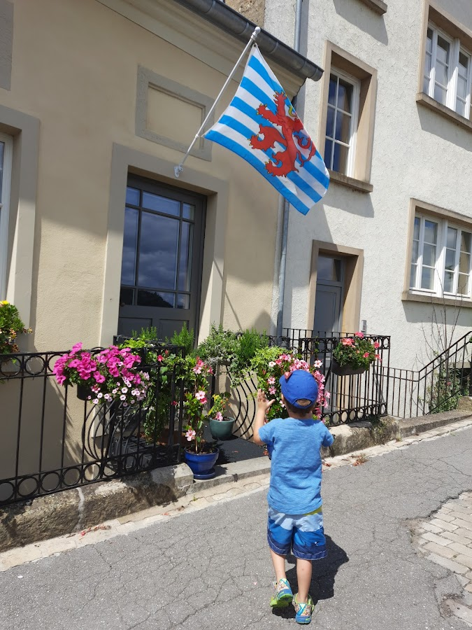
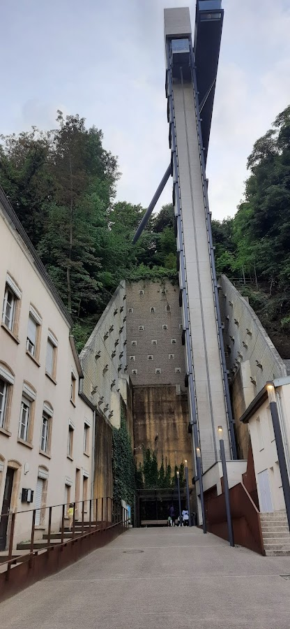
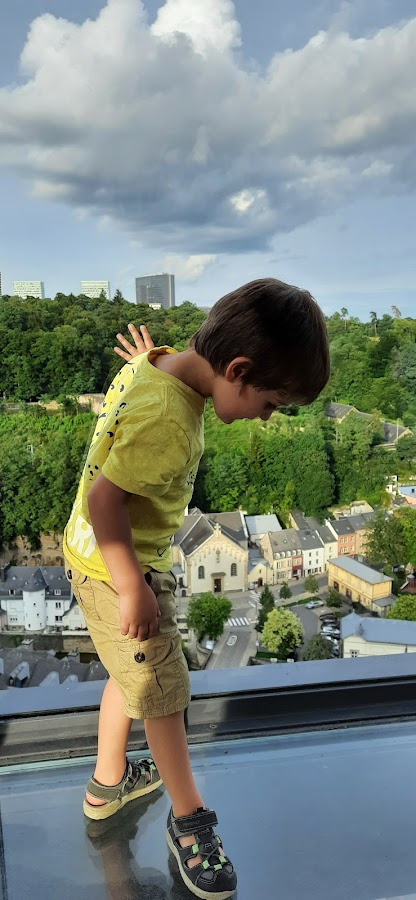
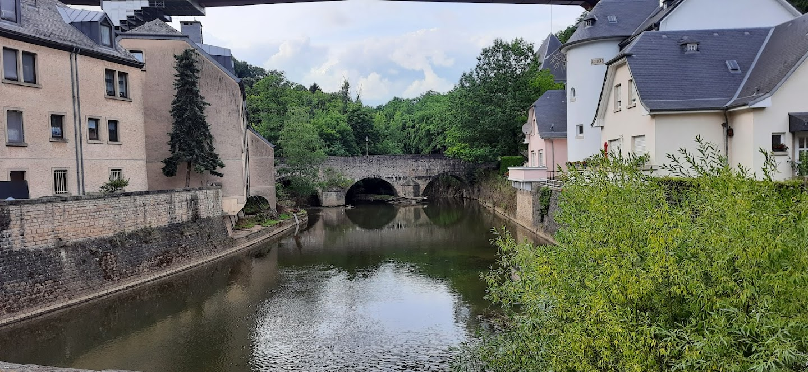
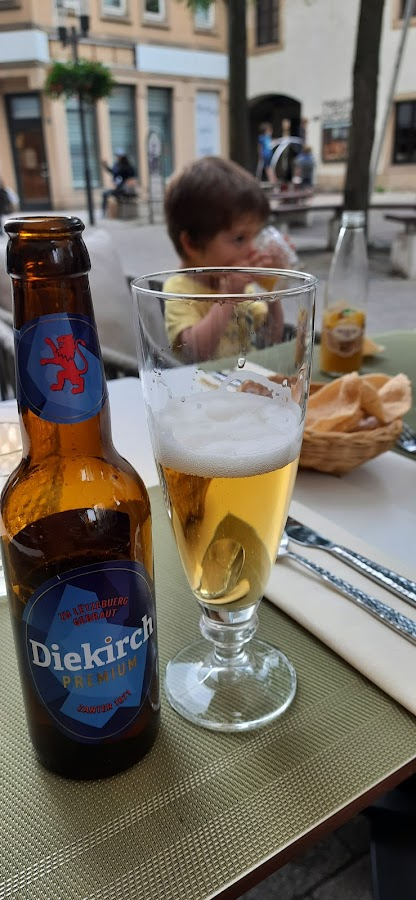
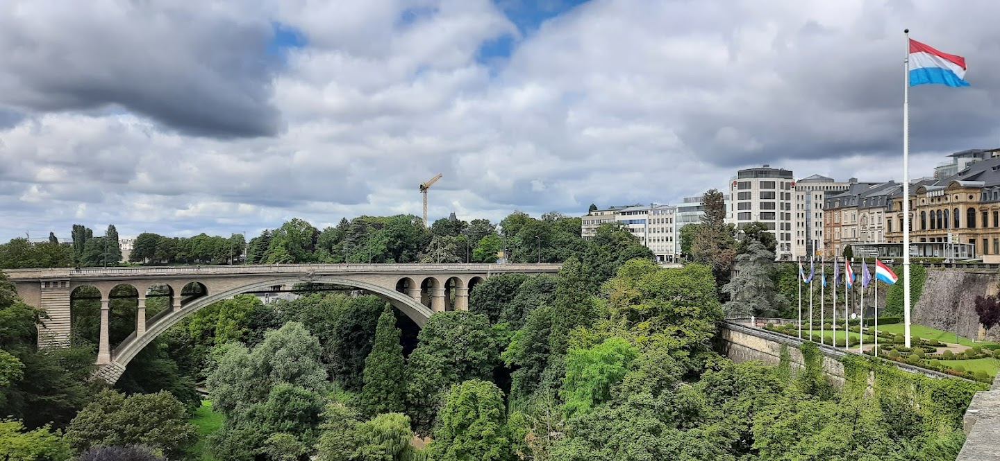
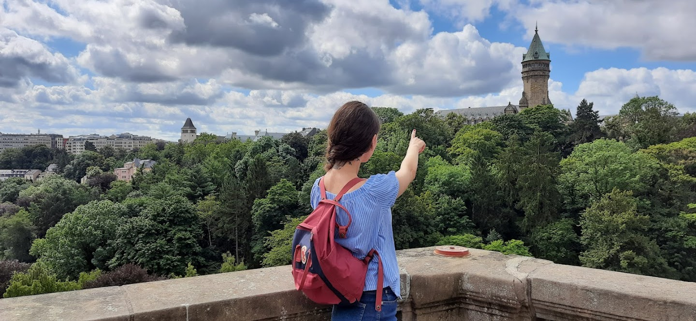
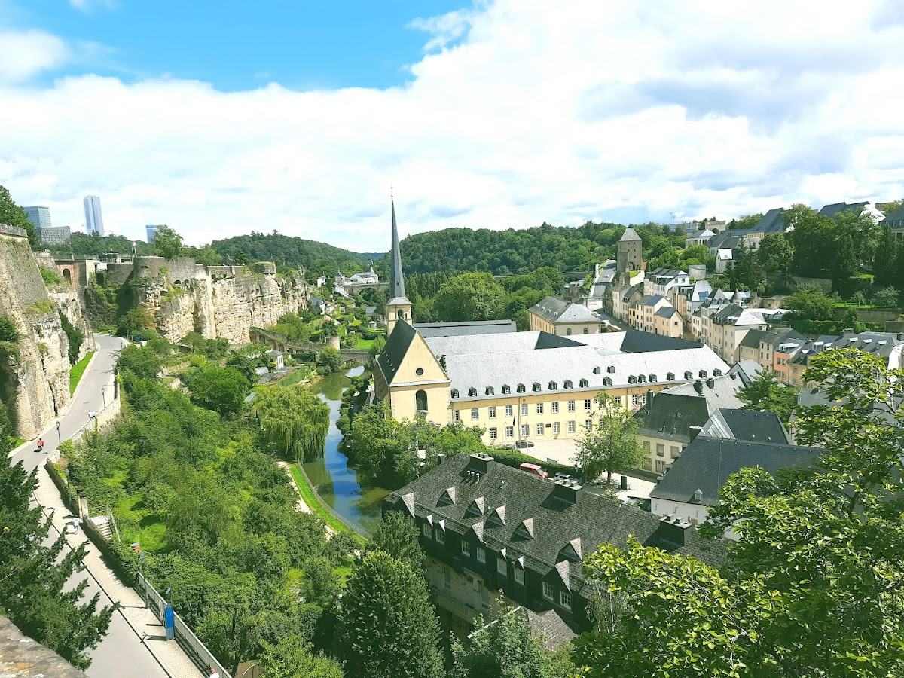

In July 2021 the borders had just opened in Germany after a second Covid lockdown and we - as most people - were eager to travel. We decided to take a Benelux family road trip (Belgium, Netherlands and Luxemburg). We started by Luxemburg where we spent one night and two days which might seem too short, but the city is very small and easy to explore.
We stayed in a hotel a bit far from the centre but we chose it because it had a pool and a parking lot. The place was ok and enough for our needs. It also had a bus stop right in front which was very convenient. Public transport is free in Luxembourg for all people, including tourists, so we took advantage of it, left the car in the parking lot and took the bus to the city centre - not having to worry about traffic or where to park. With the help of google maps it was easy to move around and the bus also had free wifi. The city was so clean and organised, the people were friendly, it had a very international vibe and being so compact it was easy to travel with a 3 year-old.
We arrived by car in the afternoon, check in and went to take a walk and see the city. The next day we planned to check out and explore a bit more before leaving to Brussels, Belgium. One good way to start is to take the elevator which has glass doors and offers nice views of the city. You will notice that the city is divided between a “lower” and a “higher” part and to get up there we took the Pfaffaethnal lift. It was free and offered nice panoramic views of the city. The elevator is open every day from 5.45 in the morning until 1 o' clock at night. Every first monday of the month, the elevator is out of order due to maintenance (from 9.00 am till 5.45 am the following day) . For more details check their official website.
 The entrance to the elevator from the ground floorOur son specially liked it because it was made of glass and had a transparent floor. It was a nice way to start the trip. We rode it down again and took a walk around the neighbourhood which was very quiet on that summer afternoon. It got more busy when we got to the old town though - you can walk there from the elevator, it is not too far. The old town is also very compact and walkable, but very lively.
 Checking the view under his feetLuxembourg is one of the world’s smallest countries, located in the heart of Western Europe, bordering three countries: France, Belgium and Germany. It is home to 167 different nationalities, most of them living in Luxembourg City , a very cosmopolitan and multilingual city, in contrast to the rest of the country, much more rural.
 The area around the lift is very calm, in contrast to the old townWe walked to the old town passing by a beautiful park and stopped at a random restaurant where we tried some local beer and had some delicious asian food. Because the city is so cosmopolitan you will find all types os international cuisine. I found it also very child friendly, there were playgrounds everywhere and since it was summer, kids were out with their families until it got dark.
 Trying some local beerThere was one playground right in front of our restaurant and the street was car-free, so while we waited my son could play all the time. It felt very safe. By the way, as of February 2025 (date when I am writing this article) Luxembourg is the richest country in the world according to the latest Hellosafe Prosperity Index, which assesses the wealth of 186 countries around the world. It is also one of the safest, and even if accomodation and restaurants might be a bit expensive (I still found it cheaper than Switzerland), other advantages like free transport and wifi everywhere, many free atractions, easy to walk everywhere, plus the compact size of the city, turn it into a budget-friendly, besides kids-friendly destination.
The next day was also our last as we still had to get to Brussels that night. Still, specially when travelling with the little one, we do not like to rush thing. I prefer to see less but really enjoy the time then take a rally of sights and not have a moment to really breath and appreciate it all. So we had a lazy breakfast at the hotel, went to the pool, then check out and leaving the car in the parking lot headed to the centre again by bus to walk the famous Chemin de la Corniche.
 View of Place de la ConstituitionI found out later it would have been easier to take the elevator and walk to Casemates for some great views, then walk down the Chemin. Well, we did it the other way around which for sure was more physical demanding! We walked all the way up after asking a few people where did it start because we couldn’t find it. But mistakes apart we had a great time. It was a sunny beautiful day and the walk was so beautiful, I found ways to entertain our son telling stories about forts, castles and medieval times, until we finally made it to the top.
 The path is full with great views and perfect picture spotsI heard later is is easier to take the elevator and walk to Casemates for some great views, then walk down the Chemin. Well, we did it the other way around which for sure was more physical demanding! We walked all the way up after asking a few people where did it start because we couldn’t find it. But mistakes apart we had a great time. It was a sunny beautiful day and the walk was so beautiful, I found ways to entertain our son telling stories about forts, castles and medieval times, until we finally made it to the topped the Casemates.
 the Valley on a sunny dayWe enjoyed the beautiful views of Petrusse Valley, Place de la Constitution, saw ruins of old towers, fortifications that were build to defend the city, passed by many historic houses with beautiful facades and Luxembourg flags and eventually made our way down again, back to the hotel and on to the next destination.